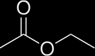
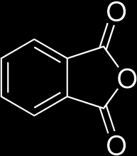
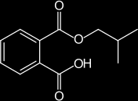
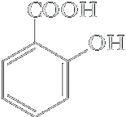
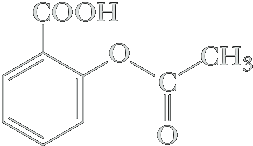

Acid anhydrides
The functional group of a carboxylic anhydride is two acyl groups bonded to an oxygen atom. These compounds are called acid anhydrides because they are formally derived from two carboxylic acids by the loss of water. An anhydride may be symmetrical (two identical acyl groups), or it may be mixed (two different acyl groups). Anhydrides are named by replacing the word acid in the name of the parent carboxylic acid with the word anhydride.

Cyclic anhydrides are named from the dicarboxylic acids from which they are derived. Here are the cyclic anhydrides derived from succinic acid, maleic acid, and phthalic acid.
Acid anhydrides react with alcohols to give one mole of ester and one mole of a carboxylic acid.
| Acetic anhydride | + | HOCH2CH3 Ethanol | ⟶ | Ethyl acetate | + |  Acetic acid Acetic acid |
| Phthalic anhydride | + |  2-Butanol 2-Butanolsec-Butyl alcohol) (racemic) | ⟶ | 1-Methylpropyl hydrogen phthalate (sec-Butyl hydrogen phthalate) (racemic) |
Thus, the reaction of an alcohol with an anhydride is a useful method for the synthesis of esters. This reaction is catalyzed by acids and by tertiary amines.
Aspirin is synthesized on an industrial scale by the reaction of acetic anhydride and salicylic acid.
| Salicylic acid | + | Acetic anhydride | ⟶ | Acetylsalicylic acid (Aspirin) | Acetic acid |